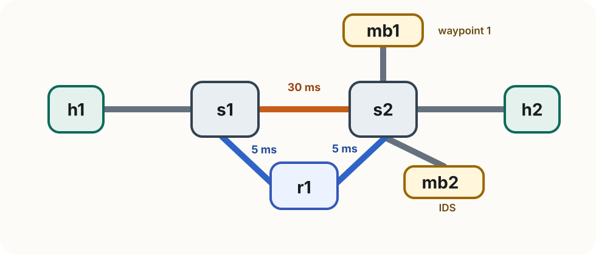

Lab 3
Rogers Executive Workshop 3 — Transport Network
In this lab you will:
The switched fabric from Lab 2 is still providing the baseline forwarding underneath this lab. Because SRv6 creates an outer IPv6 packet, that baseline fabric must already carry IPv6 traffic correctly.
The ONOS install should already have this enabled. Check it in the ONOS CLI:
onos> cfg get org.onosproject.fwd.ReactiveForwarding
Look for ipv6Forwarding in the output — it should show true.
SRv6 adds an outer IPv6 header around the packet. This check simply confirms the existing fabric will carry that outer IPv6 packet correctly.

| Node | Role | IPv4 | SRv6 SID |
|---|---|---|---|
| h1 | Traffic source | 10.0.0.1 | fc00::1 |
| h2 | Traffic destination | 10.0.0.2 | fc00::2 |
| mb1 | Waypoint 1 | 10.0.0.3 | fc00::b1 |
| mb2 | IDS / waypoint 2 | 10.0.0.4 | fc00::b2 |
| r1 | SRv6 router | 10.0.0.5 | fc00::a1 (eth0) / fc00::a2 (eth1) |
The topology has a direct path between the two switches and an alternate path through r1, which we will use later in the optional exercise.
r1has one SID per interface. Using the s1-facing SID or the s2-facing SID lets the segment list enterr1from the correct side, which matters when we later steer the forward and reverse directions differently.
First: clean up Lab 2 completely.
Ctrl+D or exit in the Mininet terminal)sudo mn -c in a terminalThen open five fresh terminals.
In every terminal, start in the Lab 3 folder:
cd ~/labs/lab3
| Terminal | Purpose |
|---|---|
| 1 — Mininet | start topology, run host commands |
| 2 — ONOS CLI | check apps, config, and flows |
| 3 — h2 HTTP server | ./run_h2_http_server.sh |
| 4 — mb2 IDS | ./run_mb2_ids.sh |
| 5 — Shell | configure_srv6.py, exercises/verify.py |
Baseline forwarding first, then SRv6 steering
From ~/labs/lab3/, start Mininet (terminal 1):
sudo python3 topology.py
The switches connect to ONOS over OpenFlow 1.3. You should see:
[Controller] Connecting to ONOS at 127.0.0.1:6653
Connect to the ONOS CLI (terminal 2):
ssh -p 8101 -o HostKeyAlgorithms=+ssh-rsa onos@localhost
# password: rocks
From the ONOS CLI, verify the required apps are active:
onos> apps -s -a
You should see these three in the list:
org.onosproject.openflow
org.onosproject.fwd
org.onosproject.proxyarp
If any of them are missing, activate them with app activate org.onosproject.<app>
Then verify that IPv6 forwarding is enabled in fwd:
onos> cfg get org.onosproject.fwd.ReactiveForwarding
Look for ipv6Forwarding in the output — it should show true.
Confirm both switches connected:
onos> devices
You should see s1 and s2 with local-status=connected.
The current ONOS install should already have ipv6Forwarding=true. If it does not, IPv6 pings to SIDs and the outer SRv6 packets will fail to traverse the switches correctly.
Before adding any SRv6 state, confirm the plain network works end to end:
mininet> pingall
Check that the hosts were learned and the baseline forwarding rules were installed:
onos> hosts
onos> flows
All four hosts should appear, and fwd should have installed ETH_DST-based rules on both switches. This gives you a working baseline fabric before SRv6 starts steering packets.
Now configure the SIDs used in this lab
From terminal 5:
python3 configure_srv6.py
This applies the same host-side setup pattern on each node:
sysctl -w net.ipv6.conf.all.forwarding=1 # allow the host to forward IPv6 packets
sysctl -w net.ipv6.conf.all.seg6_enabled=1 # turn on SRv6 processing globally
sysctl -w net.ipv6.conf.<iface>.seg6_enabled=1 # also enable SRv6 on the specific interface
ip -6 addr add <SID>/128 dev <iface> # assign the SID that identifies this node
The first line lets a node act as transit when needed. The next two lines enable SRv6 support, and the final line gives that host or interface the SID other nodes will target.
h1 -> fc00::1
h2 -> fc00::2mb1 -> fc00::b1
mb2 -> fc00::b2r1 eth0 -> fc00::a1
r1 eth1 -> fc00::a2::1and::2are the endpoints,::b*are the boxes in the service chain, and::a*are the two faces of the alternate router.
Can the switched fabric carry IPv6 packets to every SID?
mininet> h1 ping6 -c 2 fc00::2 # h1 → h2
mininet> h1 ping6 -c 2 fc00::b1 # h1 → mb1
mininet> h1 ping6 -c 2 fc00::b2 # h1 → mb2
mininet> h1 ping6 -c 2 fc00::a1 # h1 → r1
All four pings should succeed. Once IPv6 forwarding is enabled, the baseline fabric reacts to the first IPv6 packet from each host and installs ordinary ETH_DST-based rules. The switches never need to understand the SID or the SRH.
If any ping6 fails, check ONOS flows:
onos> flows
After the ping6 tests, inspect the flows on s2:
sudo ovs-ofctl dump-flows s2 -O OpenFlow13
With ipv6Forwarding true, you will see IPv6-scoped forwarding rules alongside the IPv4 ones:
priority=10, ipv6, ...
You do not need to study the exact rule fields for this lab. The important point is simply that, after the ping6 tests, the baseline fabric has learned how to carry the outer IPv6 packets used by SRv6.
If you want, you can confirm the forwarding setting again with:
onos> cfg get org.onosproject.fwd.ReactiveForwarding
Look for ipv6Forwarding — it should still show true.
Use SRv6 to force traffic through the waypoints
Start the services first as follows. Keep them running.
# terminal 3
./run_h2_http_server.sh
# terminal 4
./run_mb2_ids.sh
Now, from the Mininet CLI in terminal 1, send a suspicious request from h1:
mininet> h1 curl http://10.0.0.2/malware
h2should respond andmb2should print nothing — traffic takes the direct path and bypasses the IDS.
On h1, install an SRv6 encap route that names mb1, then mb2, then h2:
mininet> h1 ip route add 10.0.0.2 encap seg6 mode encap segs fc00::b1,fc00::b2,fc00::2 dev h1-eth0
The segment list is what makes the packet visit mb1, then mb2, then h2.
Take a moment to pause and understand what the above line does. Go back to Slide 13, and check the SID map. You can check if the route has been added correctly by running h1 ip route from the Mininet CLI.
If you find it helpful to open each host in a separate terminal, you can do so by using the given convenience script as follows: enter_host.sh </code></blockquote>
---
# Test the service chain
Send a normal request and watch terminal 4:
```text
mininet> h1 curl http://10.0.0.2/index.html
```
```text
[HH:MM:SS] [mb2 IDS] [OK] 10.0.0.1 → 10.0.0.2 — GET /index.html HTTP/1.1
```
Send a suspicious one:
```text
mininet> h1 curl http://10.0.0.2/malware
```
```text
[HH:MM:SS] [mb2 IDS] [ALERT] 10.0.0.1 → 10.0.0.2 — GET /malware HTTP/1.1
```
The segment list forced traffic through mb1 and mb2 before delivery to h2.
You can also optionally start a packet capture on mb1 as follows:
./enter_host.sh mb1
tshark -i mb1-eth0
---
# What the SRH does
The SRH carries the path you want:
```text
Outer IPv6 src: fc00::1 dst: fc00::b1
SRH segments: fc00::b1 → fc00::b2 → fc00::2
Inner IPv4: 10.0.0.1 → 10.0.0.2
```
The SRH is what expresses the service chain. Once you write the segment list, the packet is carried hop by hop through the network and visits the waypoints in that order.
---
# Exercise
Build the reverse service chain yourself
---
# Exercise — See the missing reverse path first
Before you change anything, observe the problem on `mb1`.
In terminal 5, enter `mb1` and start a capture:
```bash
./enter_host.sh mb1
tshark -i mb1-eth0 -Y "icmp && ip.addr==10.0.0.1 && ip.addr==10.0.0.2"
```
Then in Mininet, ping from `h1` to `h2`:
```text
h1 ping -c 3 h2
```
What you should notice:
- you see ICMP echo requests on `mb1`
- you do **not** see the echo replies return through `mb1`
That is the problem for this exercise. The forward SRv6 path exists, but the reverse path `h2 -> mb2 -> mb1 -> h1` does not yet exist.
---
# Exercise — Tasks
Install the reverse SRv6 route so `h2 → mb2 → mb1 → h1`:
1. **Fill in the two blanks** in `exercises/reverse_route.sh`, then run:
```bash
sudo bash exercises/reverse_route.sh
```
2. **Verify:**
```bash
sudo python3 exercises/verify.py
```
Compare with solutions/reverse_route.sh if you get stuck.
---
# Exercise — Alternate Path via r1 (Optional)
Extend the same service chain onto the lower-latency path:
- keep the same service chain
- change the path by inserting `r1` into the segment list
- observe how the RTT changes when the path changes
The direct s1-s2 link is slower (30 ms). The alternate path through r1 is faster (5 ms + 5 ms).
The next slides give the procedure. Before each step, predict which path traffic will take and what RTT you expect.
---
# Baseline RTT — what do you expect?
Without any SRv6 route, traffic follows the ordinary direct `s1-s2` path. Based on the topology, what RTT do you expect?
Remove any existing route on `h1`, then measure:
```text
mininet> h1 ip route del 10.0.0.2
mininet> h1 ping -c 5 10.0.0.2
```
Run the ping. What do you see? Compare the RTT you observe with the one-way delays shown in the topology.
---
# Add r1 as the ingress segment
Install a new SRv6 route that puts `r1` first in the segment list:
```text
mininet> h1 ip route add 10.0.0.2 encap seg6 mode encap segs fc00::a1,fc00::b1,fc00::b2,fc00::2 dev h1-eth0
```
What changes:
```text
Before: h1 ──[30ms]──> s1 ──[30ms]──> s2 → mb1 → mb2 → h2
After: h1 → s1 ──[5ms]──> r1 ──[5ms]──> s2 → mb1 → mb2 → h2
```
The outer SRv6 packet first travels `s1 → r1` (5 ms), then `r1 → s2` (5 ms). The slow `s1-s2` direct link is never used.
Before you measure, predict the new steady-state RTT and explain why it should differ from the baseline.
---
# Measure the alternate path — what changed?
```text
mininet> h1 ping -c 5 10.0.0.2
```
Run the ping. What do you see now?
You may see one slower first packet because reactive forwarding has not seen the new outer flow yet, so rules are installed on both switches before forwarding. Focus on the steady-state RTT after that and compare it with your baseline.
Did the service chain stay the same while the path changed underneath it?
Confirm `mb2` still sees the traffic (service chain is intact):
```text
[HH:MM:SS] [mb2 IDS] [OK] 10.0.0.1 → 10.0.0.2 — GET /index.html HTTP/1.1
```
---
# Add the reverse path through r1
The return path `h2 → h1` still uses the direct `s1-s2` link. Install the reverse SRv6 route on `h2`, using `fc00::a2` — the SID assigned to r1's **eth1** (s2-facing interface):
```text
mininet> h2 ip route add 10.0.0.1 encap seg6 mode encap segs fc00::b2,fc00::b1,fc00::a2,fc00::1 dev h2-eth0
```
Segment order for the reverse chain:
```text
h2 → mb2 (fc00::b2) → mb1 (fc00::b1) → r1-eth1 (fc00::a2) → h1 (fc00::1)
```
fc00::a1 lives on r1's s1-facing interface. Sending to it from mb1 would send traffic back toward the slow s2 → s1 side first. fc00::a2 lives on r1's s2-facing interface, so mb1 reaches r1 directly over the 5 ms leg.
---
# Verify both directions
Ping from `h1` to confirm the forward path still routes through `r1`:
```text
mininet> h1 ping -c 5 10.0.0.2
```
Ping from `h2` to confirm the reverse path also routes through `r1`:
```text
mininet> h2 ping -c 5 10.0.0.1
```
Both should now show the same lower steady-state RTT you observed after moving onto the `r1` path. You can also capture on `r1` to confirm it sees traffic in both directions:
```bash
./enter_host.sh r1
tshark -i r1-eth0 -i r1-eth1 -Y "ipv6.routing.type == 4"
```
You should see two SRv6 packets on r1-eth0 (from s1) and two on r1-eth1 (toward s2), one per direction per ping.
---
# Troubleshooting
**`devices` is empty, or `pingall` fails before the SRv6 steps start.**
Check `onos> apps -s -a` and confirm `openflow`, `fwd`, and `proxyarp` are active. If devices are connected and `fwd` is active but traffic still fails, run `sudo docker restart onos`, wait 1–2 minutes, reconnect the ONOS CLI, and retry.
**`ping6` to `fc00::2` or the other SIDs fails.**
Run `python3 configure_srv6.py` if you have not already, and verify `onos> cfg get org.onosproject.fwd.ReactiveForwarding` still shows `ipv6Forwarding=true`.
**The service chain is installed, but `mb2` prints nothing.**
Make sure both `./run_h2_http_server.sh` and `./run_mb2_ids.sh` are running. Then confirm the route uses `encap seg6 mode encap` and includes `fc00::b2` in the segment list.
**The reverse-direction exercise does not work.**
Check the route on `h2`: the segment list should start `fc00::b2,fc00::b1,...,fc00::1` so the reverse direction visits the same waypoints in reverse order. Run `sudo python3 exercises/verify.py` to confirm.
**The optional `r1` exercise does not reduce RTT.**
The forward route on `h1` should begin with `fc00::a1`; the reverse route on `h2` should use `fc00::a2`. If the reverse path still uses the direct link, only one direction will improve.
---
# Summary
In this lab you confirmed that:
- an SRv6 segment list can force traffic through explicit waypoints before it reaches the destination
- the application does not need to change; changing the segment list changes the realized path and service chain underneath it
- the reverse direction needs its own segment list as well
SRv6 keeps the path decision in the segment list, so the same application traffic can be steered differently without changing the application itself. In the optional extension, that same mechanism moved traffic onto a lower-latency path. Lab 4 builds on this idea by letting a controller realize the needed path and treatment from a higher-level request.